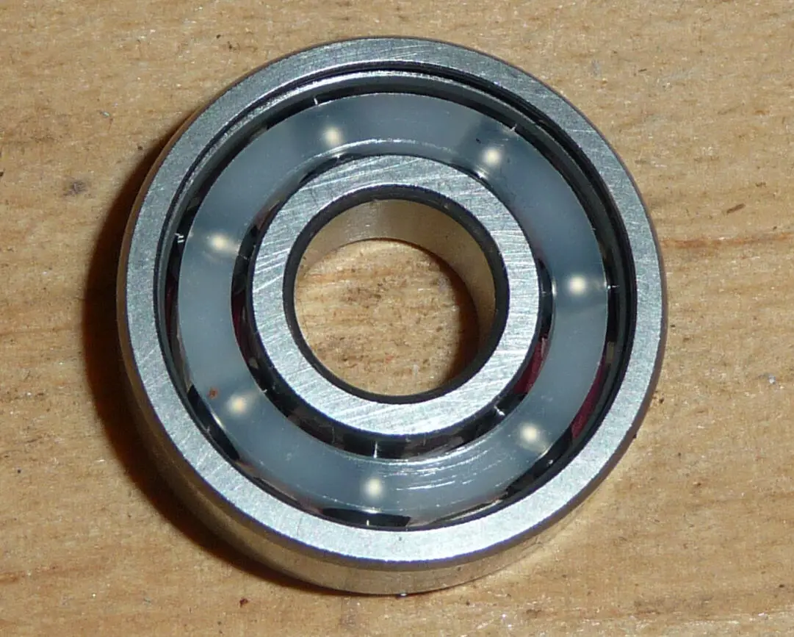
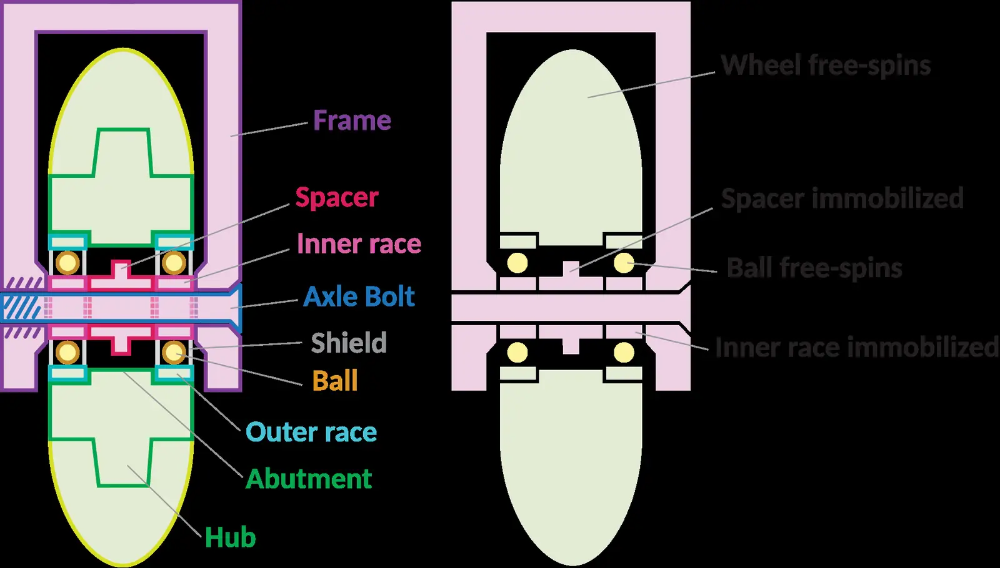

Short answer
A service worker sits between the browser and the network and can answer from a cache. The canonical URL must still return the HTML specification to a fetch that does not execute that worker. The cache is not the document of record.

Definition
App shells sometimes send an empty HTML file and fill it from script or from a worker. If a basic fetch receives only the shell, the URL is not yet a document about the product. SEO Health asks what the response contains. Offline support can remain for users who already loaded the page. It should not be the only place the operating range exists.
What belongs on the page
Fetch the canonical URL with a client that does not install the worker. Read the HTML. If the range is missing, render it into the server or static HTML. Check that the worker does not cache a stale noindex or an old price after you correct the document. Re-fetch.
What to check
- Fetch without the service worker and read the HTML.
- Put the specification in that response.
- Do not cache a stale robots directive.
- Re-audit after the shell changes.
A practical example
A catalog route returns an empty app shell. The worker later paints the valve range for repeat visitors. A first fetch never sees the range. The repair puts the range in the HTML response and lets the worker cache that response. No app-store ranking is implied.

What this does not claim
A correct service-worker setup does not guarantee rankings or AI citations.
Where Mika Visibility files this
The document is the network response for the URL, not the cache a repeat visitor happens to hold. Mika Visibility files this on the SEO Health track, with crawlability, status codes, and page basics. SEO Growth remains a separate question about coverage that is still unwritten. GEO remains a separate question about whether a careful reader can find a supportable answer. There is no blended overall score.
FAQ
What must a canonical URL return even if a service worker exists?
A service worker sits between the browser and the network and can answer from a cache. The canonical URL must still return the HTML specification to a fetch that does not execute that worker. The cache is not the document of record.
Why is an empty app shell not yet a product document?
App shells sometimes send an empty HTML file and fill it from script or from a worker. If a basic fetch receives only the shell, the URL is not yet a document about the product. SEO Health asks what the response contains. Offline support can remain for users who already loaded the page. It should not be the only place the operating range exists.
Does a service worker guarantee rankings?
A correct service-worker setup does not guarantee rankings or AI citations.
Next step
Run a structured SEO + GEO audit to see health findings, growth gaps, and a blueprint you can act on.
Clearer entities, answers, evidence, and context make pages easier to understand and reference. Results in any answer product are not guaranteed.